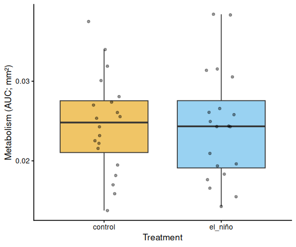
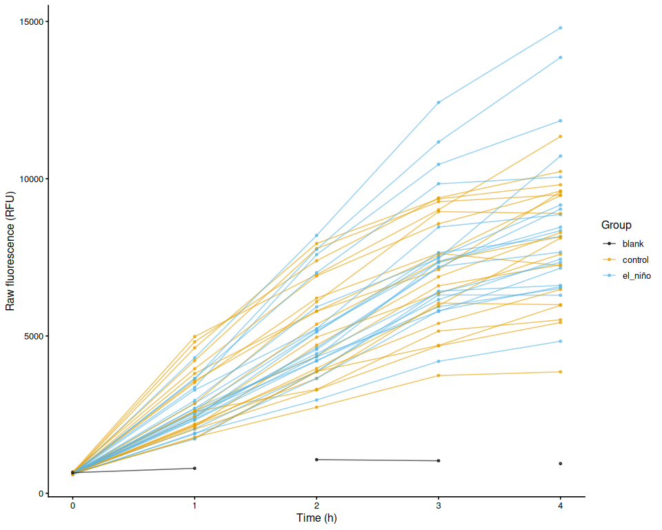
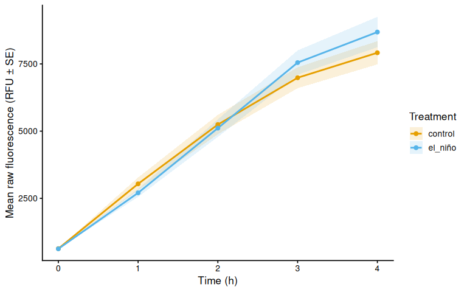
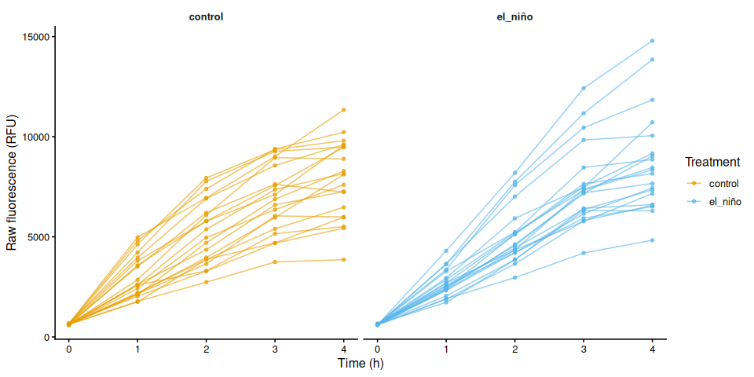
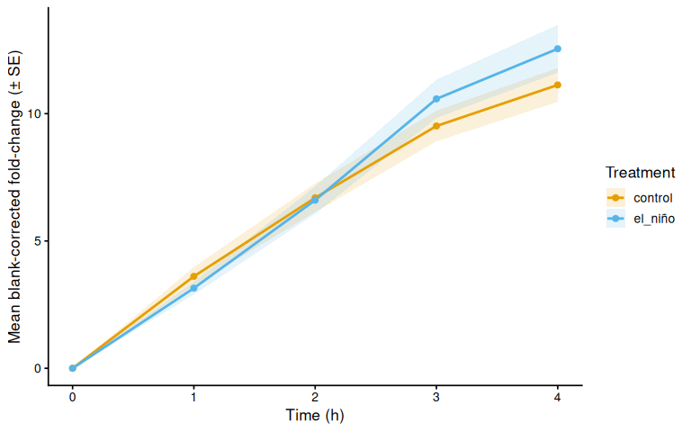
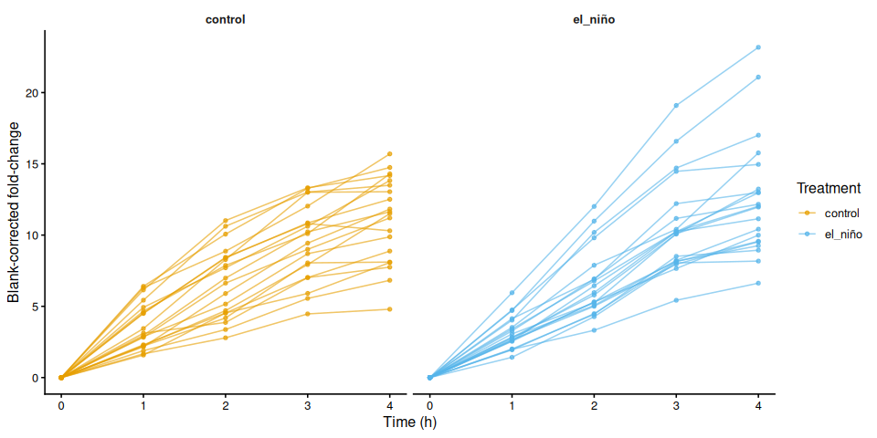
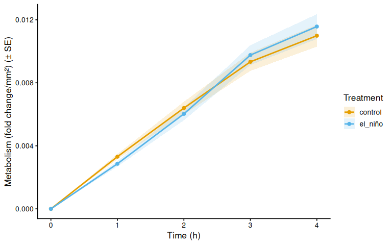
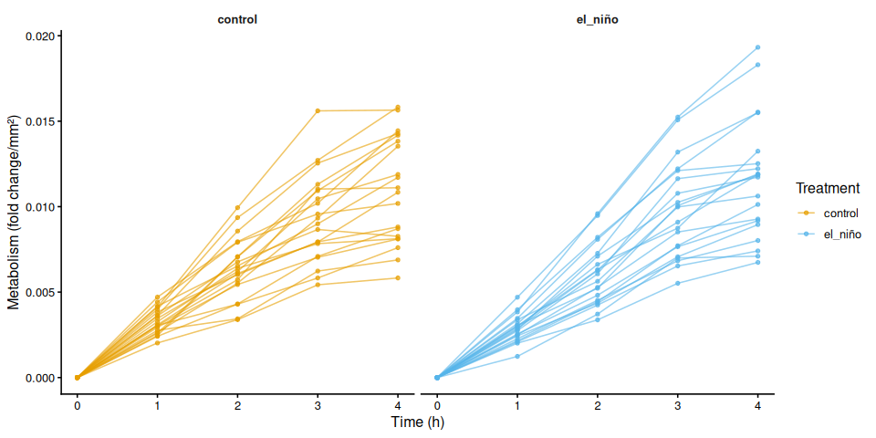

INTRO
Steven wanted to assess metabolism of adult Magallana gigas (Pacific oyster) that had previously been subjected to an “El Niño” conditioning treatment, relative to untreated controls, during an acute 36°C heat stress. The goal was to determine whether “El Niño” conditioning altered the metabolic response to heat stress.
MATERIALS & METHODS
Adult Magallana gigas were previously subjected to an “El Niño” treatment (parameters/duration still needed from Steven Roberts) and then held at 10°C (duration still needed from Steven Roberts) in artificial seawater (Instant Ocean).
Today, control (n = 20) and “El Niño” (n = 20) oysters were transferred to 12oz plastic cups containing 125mL of resazurin working solution and subjected to a four hour heat stress at 36°C in a floor-standing incubator.
Every hour (0, 1, 2, 3, and 4hrs), 200µL of resazurin was transferred from each cup to a well in a clear, 96-well plate. The plates (plate-D, plate-E, plate-F) were stored overnight at 4°C, covered in foil. The following morning, resazurin fluorescence was measured using a Synergy HTX (Agilent) plate reader.
Because each well holds a single read (rather than a well being re-read across the time series), individual oysters were tracked across timepoints using sample_ID.group in the layout file.
Area Measurements
Oyster shell areas (mm²) were measured in ImageJ and used to size-normalize metabolic rates. Images and ImageJ outputs are in resazurin/data/20260921-mgig-36C/images/ (GitHub).
Data Analysis
Analysis was performed with 01.00-resazurin-20260921-mgig-36C.Rmd (GitHub).
See resazurin/data/20260921-mgig-36C/README.md (GitHub) for full experimental notes.
RESULTS
“El Niño” conditioning had no detectable effect on size-normalized metabolic rate during the 36°C heat stress.
Area under the curve (AUC) of size-normalized metabolism was essentially identical between the two treatments (ANOVA: F = 0.0025, p = 0.9604; Tukey: estimate = 0.0001, p = 0.9604):
| Treatment | n | Mean AUC | SD | SE | Median |
|---|---|---|---|---|---|
| control | 20 | 0.0245 | 0.00610 | 0.00136 | 0.0248 |
| el_niño | 20 | 0.0244 | 0.00697 | 0.00156 | 0.0243 |
The same pattern held in the time-series mixed model. Time was a very strong predictor of metabolism (F = 384.04, p < 0.0001), as expected for resazurin reduction accumulating over the assay, but neither treatment (F = 0.0053, p = 0.9423) nor the time × treatment interaction (F = 0.9640, p = 0.4291) was significant. No individual timepoint showed a significant difference between treatments (all Tukey p ≥ 0.38).
All 40 oysters were retained — no wells were excluded from analysis.

Markdown below was knitted from 01.00-resazurin-20260921-mgig-36C.Rmd (GitHub).
1 Background
Adult M. gigas (Pacific oyster) previously subjected to an “El Niño” treatment, alongside untreated controls (n = 20 per treatment), were placed in 12 oz plastic cups containing 125 mL of resazurin working solution and held at 36°C in a floor-standing incubator for four hours. Every hour, 200 µL of resazurin was transferred from each cup to a well of a clear 96-well plate. Plates were stored overnight at 4°C covered in foil, and fluorescence was read the following morning on a Synergy HTX (Agilent) plate reader.
See resazurin/data/20260921-mgig-36C/README.md for full experimental notes.
1.1 Where the timepoint comes from
Two layouts are supported, and the script auto-detects which one applies:
| Design | Timepoint source | Example |
|---|---|---|
| One file per plate per timepoint | Plate export filename, e.g. <date>_<plate>_T<hr>.txt |
20260624_round1_T3.txt |
| One file per plate, several timepoints per plate | A timepoint column in layout.csv |
plate-D.txt + timepoint = T0/T1 |
This experiment uses the second design: plate-D.txt, plate-E.txt and plate-F.txt each hold one or two hourly reads, and layout.csv records which well belongs to which timepoint. Because a well is then read only once, sample_ID.group is required — it is the only thing linking the same animal across timepoints — and the script stops with an explanatory error if it is missing. Timepoint labels may be bare numbers (0, 1.5), T-prefixed (T0, T3) or unit-suffixed (4h, 90min).
1.2 Expected inputs
| Path | Description |
|---|---|
<data_dir>/*.txt |
Plate reader fluorescence exports (files without a Results block are reported and skipped) |
<data_dir>/layout.csv |
Well metadata: plate ID, well ID, blank flag, optional timepoint, any number of *.group columns (e.g. family_ID.group, treatment.group, sample_ID.group) and any number of *.measurement columns (e.g. area_mm2.measurement, from ImageJ) |
data_dir and out_dir are set in the configuration block at the top of Load Data; in normal use those two paths are the only lines that need editing between experiments.
1.3 Expected outputs
All outputs are written to out_dir (resazurin/outputs/01.00-resazurin-20260921-mgig-36C/).
| File | Description |
|---|---|
figures/ |
All plots generated by this script |
auc_all_metrics.csv |
Per-individual AUC values for every active measurement metric |
auc_summary.csv |
Group-level AUC summary statistics (mean, SD, SE, median) |
metabolism.csv |
Full per-well per-timepoint metabolism data frame |
pairwise_stats.csv |
Tukey-adjusted pairwise comparisons from AUC linear models |
2 Setup
2.1 Knitr options
knitr::opts_chunk$set(
echo = TRUE, # Display code chunks
eval = TRUE, # Evaluate code chunks
warning = FALSE, # Hide warnings
message = FALSE, # Hide messages
comment = "", # Prevents appending '##' to beginning of lines in code output
results = 'hold' # Holds output so it's all printed together after code chunk
)2.2 Load libraries
library(tidyverse)
library(pracma) # trapz()
library(lme4)
library(lmerTest)
library(emmeans)
library(multcompView)
library(cowplot)
library(colorspace) # qualitative_hcl() for large palettes3 Helper Functions
normalize_well_id <- function(x) {
x <- toupper(trimws(x))
valid <- str_detect(x, "^[A-Z]+[0-9]+$")
out <- rep(NA_character_, length(x))
if (!any(valid)) return(out)
m <- str_match(x[valid], "^([A-Z]+)([0-9]+)$")
out[valid] <- paste0(m[, 2], as.integer(m[, 3]))
out
}
# Timepoint encoded in the plate export FILENAME, e.g. "..._T3.txt" -> 3.
# Returns NA when the filename carries no timepoint token, in which case the
# timepoint is taken from the layout file instead (see `timepoint_source`).
parse_time_hr <- function(path) {
hit <- str_match(basename(path),
"(?i)[_-]T([0-9]+(?:\\.[0-9]+)?)\\.[^.]+$")
as.numeric(hit[, 2])
}
# Plate ID from the plate export FILENAME. Must resolve to the same value as
# `plate_id` in layout.csv, which is lower-cased and has any "plate-"/"plate_"
# prefix stripped. Handles both file naming conventions:
# "20260624_round1_T3.txt" -> "round1" (date_plate_timepoint)
# "plate-D.txt" -> "d" (one file per plate)
parse_plate_id <- function(path) {
base <- str_remove(basename(path), "\\.[^.]+$")
has_time <- !is.na(parse_time_hr(path))
dated <- str_match(
base, "(?i)^[0-9]{8}[_-](.+?)[_-]T[0-9]+(?:\\.[0-9]+)?$")[, 2]
id <- if (!is.na(dated)) {
dated
} else if (has_time) {
str_remove(base, "(?i)[_-]T[0-9]+(?:\\.[0-9]+)?$")
} else {
base
}
id <- str_remove(str_to_lower(trimws(id)), "^plate[_-]")
if (is.na(id) || id == "") "unknown" else id
}
# Timepoint encoded in the LAYOUT, converted to numeric hours. Accepts bare
# numbers ("0", "1.5"), T-prefixed labels ("T0", "t3") and unit suffixes
# ("4h", "90min" -> 1.5). Returns NA when no number can be recovered.
parse_timepoint_hr <- function(x) {
x <- trimws(as.character(x))
num <- suppressWarnings(as.numeric(str_extract(x, "[0-9]+(?:\\.[0-9]+)?")))
is_min <- str_detect(str_to_lower(replace_na(x, "")), "min")
if_else(is_min & !is.na(num), num / 60, num)
}
extract_results_block <- function(lines) {
results_idx <- which(trimws(lines) == "Results")
if (length(results_idx) == 0) stop("No Results section found")
idx <- results_idx[1]
header_tokens <- str_split(lines[idx + 1], "\\t")[[1]] |> trimws()
col_ids <- header_tokens[
header_tokens != "" & str_detect(header_tokens, "^[0-9]+$")]
j <- idx + 2
data_lines <- character()
while (j <= length(lines)) {
line <- lines[j]
if (trimws(line) == "") break
if (!str_detect(line, "^[A-Za-z]\\t")) break
data_lines <- c(data_lines, line)
j <- j + 1
}
list(col_ids = col_ids, data_lines = data_lines)
}
parse_plate_export <- function(path) {
lines <- readLines(path, warn = FALSE)
res <- extract_results_block(lines)
map_dfr(res$data_lines, function(line) {
tokens <- str_split(line, "\\t")[[1]] |> trimws()
tokens <- tokens[tokens != ""]
row_letter <- tokens[1]
nums <- suppressWarnings(as.numeric(tokens[-1]))
valid_idx <- which(!is.na(nums))
if (length(valid_idx) == 0) return(tibble())
vals <- nums[valid_idx]
n <- min(length(vals), length(res$col_ids))
tibble(
row_id = toupper(row_letter),
col_id = as.integer(res$col_ids[seq_len(n)]),
well_id = normalize_well_id(
paste0(toupper(row_letter), res$col_ids[seq_len(n)])),
value = vals[seq_len(n)]
)
}) %>%
mutate(
plate_id = str_to_lower(parse_plate_id(path)),
time_hr = parse_time_hr(path)
)
}
# Stable identity of one individual across timepoints. Used for line traces,
# fold-change baselines, repeated-measures random effects and AUC grouping.
#
# The correct fallback depends on where the timepoint comes from:
# * FILENAME - the same well is re-read at every timepoint, so plate + well
# already identifies the individual.
# * LAYOUT - a well holds a single read, so plate + well cannot span time
# and `sample_ID.group` is required (validated when the layout is loaded).
# Blanks are keyed separately so they never merge with sample traces.
trace_key <- function(df, timepoint_source = "filename") {
well_key <- paste(df$plate_id, df$well_id, sep = "_")
fallback <- if (identical(timepoint_source, "layout")) df$plate_id else well_key
sid <- if ("sample_id_group" %in% names(df))
as.character(df$sample_id_group) else rep(NA_character_, nrow(df))
has_sid <- !is.na(sid) & trimws(sid) != ""
blank <- if ("is_blank" %in% names(df))
replace_na(df$is_blank, FALSE) else rep(FALSE, nrow(df))
if_else(blank,
paste0("blank_", fallback),
if_else(has_sid, sid, fallback))
}
# Distinct non-empty values of a column, or character(0) if it is absent.
# Keeps figure code from failing on layouts that omit a grouping column.
col_values <- function(df, col) {
if (!col %in% names(df)) return(character(0))
v <- as.character(df[[col]])
unique(v[!is.na(v) & trimws(v) != ""])
}
trapezoid_auc <- function(time_hr, value) {
ok <- is.finite(time_hr) & is.finite(value)
t <- time_hr[ok]
v <- value[ok]
if (length(t) < 2) return(NA_real_)
ord <- order(t)
t <- t[ord]; v <- v[ord]
sum(diff(t) * (head(v, -1) + tail(v, -1)) / 2)
}
# Shared helper: extract display unit string from a measurement column name.
# e.g. "area_mm2_measurement" -> "mm²", "weight_mg_measurement" -> "mg"
parse_meas_unit <- function(col_name) {
unit_raw <- col_name |>
str_remove("^metabolism_per_") |>
str_remove("_measurement$") |>
str_extract("[^_]+$")
case_when(
unit_raw == "mm2" ~ "mm²",
unit_raw == "cm2" ~ "cm²",
unit_raw == "mm3" ~ "mm³",
unit_raw == "cm3" ~ "cm³",
TRUE ~ unit_raw
)
}
# y-axis label for metabolism line plots: "fold change/mm²"
metabolism_y_label <- function(col_name) {
paste0("Metabolism (fold change/", parse_meas_unit(col_name), ")")
}
# y-axis label for AUC box plots: "Metabolism (AUC; mm²)"
auc_y_label <- function(metric_name) {
paste0("Metabolism (AUC; ", parse_meas_unit(metric_name), ")")
}
# Mean ± SE time series of `value_col`, one coloured line per level of
# `colour_col`, optionally split into linetypes by a second grouping column.
mean_ts_plot <- function(df, value_col, colour_col, colours, legend_name,
y_lab, linetype_col = NULL, linetypes = NULL) {
if (!is.null(linetype_col) && !linetype_col %in% names(df))
linetype_col <- NULL
grp <- c(colour_col, linetype_col, "time_hr")
summ <- df %>%
filter(!is.na(.data[[colour_col]]), !exclude_from_analysis) %>%
group_by(across(all_of(grp))) %>%
summarise(
mean_val = mean(.data[[value_col]], na.rm = TRUE),
se_val = sd(.data[[value_col]], na.rm = TRUE) /
sqrt(sum(!is.na(.data[[value_col]]))),
n = sum(!is.na(.data[[value_col]])),
.groups = "drop"
) %>%
mutate(group_var = if (is.null(linetype_col))
as.character(.data[[colour_col]])
else
paste(.data[[colour_col]], .data[[linetype_col]], sep = "."))
p <- ggplot(summ, aes(x = time_hr, y = mean_val,
colour = .data[[colour_col]], group = group_var)) +
geom_ribbon(aes(ymin = mean_val - se_val, ymax = mean_val + se_val,
fill = .data[[colour_col]]),
alpha = 0.15, colour = NA) +
geom_line(mapping = if (!is.null(linetype_col))
aes(linetype = .data[[linetype_col]]) else NULL,
linewidth = 1) +
geom_point(size = 2) +
scale_colour_manual(values = colours, name = legend_name,
breaks = names(colours)) +
scale_fill_manual(values = colours, name = legend_name,
breaks = names(colours)) +
labs(x = "Time (h)", y = y_lab) +
theme_classic(base_size = 13)
if (!is.null(linetype_col))
p <- p + scale_linetype_manual(values = linetypes, name = "Treatment")
p
}
# One line per individual (`trace_id`), faceted by `facet_col` and coloured
# by `colour_col`.
individual_ts_plot <- function(df, value_col, facet_col, colour_col,
colours, legend_name, y_lab) {
df %>%
filter(!is.na(.data[[facet_col]])) %>%
ggplot(aes(x = time_hr, y = .data[[value_col]], group = trace_id,
colour = .data[[colour_col]])) +
geom_line(alpha = 0.6) +
geom_point(size = 1.2, alpha = 0.7) +
facet_wrap(vars(.data[[facet_col]])) +
scale_colour_manual(values = colours, name = legend_name,
breaks = names(colours)) +
labs(x = "Time (h)", y = y_lab) +
theme_classic(base_size = 12) +
theme(strip.background = element_blank(),
strip.text = element_text(face = "bold"))
}4 Load Data
4.1 Plate export files
# ---------------------------------------------------------------------------
# CONFIGURATION - normally the only lines that change between experiments.
# ---------------------------------------------------------------------------
proj_root <- rprojroot::find_rstudio_root_file()
data_dir <- file.path(proj_root, "resazurin", "data", "20260921-mgig-36C")
out_dir <- file.path(proj_root, "resazurin", "outputs",
"01.00-resazurin-20260921-mgig-36C")
# Which files in `data_dir` are plate reader exports. The default accepts any
# .txt; anything without a "Results" block is reported and skipped.
plate_file_pattern <- "(?i)\\.txt$"
# ---------------------------------------------------------------------------
fig_dir <- file.path(out_dir, "figures")
dir.create(fig_dir, recursive = TRUE, showWarnings = FALSE)
dir.create(out_dir, recursive = TRUE, showWarnings = FALSE)
plate_files <- list.files(data_dir, pattern = plate_file_pattern,
full.names = TRUE)
if (length(plate_files) == 0)
stop("No files matching '", plate_file_pattern, "' found in ", data_dir)
plate_raw <- map_dfr(plate_files, function(path) {
tryCatch(parse_plate_export(path),
error = function(e) {
message("Parse error in ", basename(path), ": ", e$message)
tibble()
})
})
str(plate_raw)tibble [288 × 6] (S3: tbl_df/tbl/data.frame)
$ row_id : chr [1:288] "A" "A" "A" "A" ...
$ col_id : int [1:288] 1 2 3 4 5 6 7 8 9 10 ...
$ well_id : chr [1:288] "A1" "A2" "A3" "A4" ...
$ value : num [1:288] 597 609 609 631 601 669 655 599 623 614 ...
$ plate_id: chr [1:288] "d" "d" "d" "d" ...
$ time_hr : num [1:288] NA NA NA NA NA NA NA NA NA NA ...4.2 Layout file
layout_path <- file.path(data_dir, "layout.csv")
layout_raw <- read_csv(layout_path,
col_types = cols(.default = "c"),
show_col_types = FALSE)
# Standardise column names to snake_case
names(layout_raw) <- names(layout_raw) |>
str_to_lower() |>
str_replace_all("[^a-z0-9]+", "_") |>
str_replace_all("_+", "_") |>
str_replace("_$", "")
# Normalise plate_id to match plate file ids (strip "plate-" prefix)
layout_clean <- layout_raw %>%
mutate(
plate_id = str_remove(str_to_lower(plate_id), "^plate-"),
well_id = normalize_well_id(plate_well),
is_blank = if ("is_blank" %in% names(layout_raw))
toupper(trimws(is_blank)) %in% c("TRUE", "T", "1", "YES", "Y")
else
FALSE
)
# Trailing blank rows are common in hand-edited layout CSVs; drop anything
# without a resolvable plate + well.
layout_clean <- layout_clean %>%
filter(!is.na(plate_id), plate_id != "", !is.na(well_id))
found_exclude_col <- intersect(
c("exclude_from_analysis", "exclude", "omit", "not_analyzed"),
names(layout_clean)
)[1]
layout_clean <- layout_clean %>%
mutate(
exclude_from_analysis = if (!is.na(found_exclude_col))
toupper(trimws(.data[[found_exclude_col]])) %in%
c("TRUE", "T", "1", "YES", "Y")
else
FALSE
)
# Identify measurement columns and group columns
measurement_cols <- names(layout_clean)[
str_detect(names(layout_clean), "_measurement$")]
group_cols <- names(layout_clean)[
str_detect(names(layout_clean), "_group$")]
# Cast measurement columns to numeric
layout_clean <- layout_clean %>%
mutate(across(all_of(measurement_cols),
~ suppressWarnings(as.numeric(.x))))
# Determine which measurement columns actually contain finite data
active_meas_cols <- measurement_cols[
sapply(measurement_cols, function(col)
any(is.finite(layout_clean[[col]]), na.rm = TRUE))]
# Normalise group values to lowercase so they match colour scale definitions
layout_clean <- layout_clean %>%
mutate(across(all_of(group_cols),
~ str_to_lower(trimws(as.character(.x)))))
# --- Timepoint source ------------------------------------------------------
# Prefer a timepoint column in the layout (per-well, so one plate file may hold
# several timepoints); fall back to the timepoint parsed from the filename.
timepoint_col <- intersect(
c("timepoint", "time_point", "timepoint_hr", "time_hr", "time_hrs",
"time_h", "hours", "hour", "time"),
names(layout_clean)
)[1]
layout_time_ok <- !is.na(timepoint_col) &&
any(is.finite(parse_timepoint_hr(layout_clean[[timepoint_col]])))
filename_time_ok <- any(is.finite(plate_raw$time_hr))
timepoint_source <- if (layout_time_ok) "layout" else
if (filename_time_ok) "filename" else NA_character_
if (is.na(timepoint_source))
stop("Could not determine a timepoint for any read. Either name plate export ",
"files '<...>_T<hr>.txt' or add a `timepoint` column to layout.csv.")
if (layout_time_ok && filename_time_ok)
message("Timepoints found in both the layout and the filenames; ",
"the layout column `", timepoint_col, "` takes precedence.")
if (timepoint_source == "layout") {
layout_clean <- layout_clean %>%
mutate(
timepoint_label = as.character(.data[[timepoint_col]]),
time_hr = parse_timepoint_hr(.data[[timepoint_col]])
)
# With layout-supplied timepoints a well is read once, so plate + well cannot
# follow an individual through the time series - sample IDs are the only link.
sample_ids_present <- "sample_id_group" %in% names(layout_clean) &&
any(!is.na(layout_clean$sample_id_group) &
trimws(layout_clean$sample_id_group) != "")
if (!sample_ids_present)
stop("Timepoints come from layout.csv, so each well holds a single read ",
"and plate + well cannot identify an individual across timepoints. ",
"Populate a `sample_ID.group` column in layout.csv.")
}
message("Timepoint source: ", timepoint_source,
if (timepoint_source == "layout")
paste0(" (layout column `", timepoint_col, "`)") else "")
message("Group columns: ", paste(group_cols, collapse = ", "))
message("Active measurement columns: ",
paste(active_meas_cols, collapse = ", "))
str(layout_clean)tibble [205 × 16] (S3: tbl_df/tbl/data.frame)
$ plate_id : chr [1:205] "d" "d" "d" "d" ...
$ plate_well : chr [1:205] "A01" "A02" "A03" "A04" ...
$ is_blank : logi [1:205] FALSE FALSE FALSE FALSE FALSE FALSE ...
$ family_id_group : chr [1:205] NA NA NA NA ...
$ sample_id_group : chr [1:205] "56" "72" "13" "65" ...
$ treatment_group : chr [1:205] "el_niño" "el_niño" "el_niño" "el_niño" ...
$ timepoint : chr [1:205] "T0" "T0" "T0" "T0" ...
$ width_mm_measurement : num [1:205] NA NA NA NA NA NA NA NA NA NA ...
$ length_mm_measurement: num [1:205] NA NA NA NA NA NA NA NA NA NA ...
$ weight_mg_measurement: num [1:205] NA NA NA NA NA NA NA NA NA NA ...
$ area_mm2_measurement : num [1:205] 617 950 1249 1004 1267 ...
$ imagej_id : chr [1:205] "8" "5" "2" "4" ...
$ well_id : chr [1:205] "A1" "A2" "A3" "A4" ...
$ exclude_from_analysis: logi [1:205] FALSE FALSE FALSE FALSE FALSE FALSE ...
$ timepoint_label : chr [1:205] "T0" "T0" "T0" "T0" ...
$ time_hr : num [1:205] 0 0 0 0 0 0 0 0 0 0 ...5 Merge Plate Data with Layout
dat <- plate_raw %>%
# When the layout supplies the timepoint, drop the (all-NA) filename-derived
# column so the layout is the single source of truth for `time_hr`.
select(-any_of(if (timepoint_source == "layout") "time_hr" else character(0))) %>%
left_join(
layout_clean %>%
select(plate_id, well_id, is_blank, exclude_from_analysis,
any_of(c("exclude_reason", "timepoint_label", "time_hr")),
all_of(group_cols), all_of(measurement_cols)),
by = c("plate_id", "well_id")
) %>%
mutate(
is_blank = replace_na(is_blank, FALSE),
exclude_from_analysis = replace_na(exclude_from_analysis, FALSE)
)
# Wells present in the plate export but with no usable timepoint cannot be
# placed in the time series: unused wells, or wells missing from layout.csv.
unassigned <- dat %>% filter(!is.finite(time_hr))
if (nrow(unassigned) > 0) {
message(nrow(unassigned), " well read(s) dropped for having no layout ",
"timepoint (e.g. ",
paste(head(paste(unassigned$plate_id, unassigned$well_id, sep = ":"), 5),
collapse = ", "), ")")
dat <- dat %>% filter(is.finite(time_hr))
}
# Single definition of individual identity, reused downstream for line traces,
# fold-change baselines, repeated-measures random effects and AUC grouping.
dat$trace_id <- trace_key(dat, timepoint_source)
time_levels <- sort(unique(dat$time_hr))
message("Timepoints (h): ", paste(time_levels, collapse = ", "))
str(dat)tibble [205 × 17] (S3: tbl_df/tbl/data.frame)
$ row_id : chr [1:205] "A" "A" "A" "A" ...
$ col_id : int [1:205] 1 2 3 4 5 6 7 8 9 10 ...
$ well_id : chr [1:205] "A1" "A2" "A3" "A4" ...
$ value : num [1:205] 597 609 609 631 601 669 655 599 623 614 ...
$ plate_id : chr [1:205] "d" "d" "d" "d" ...
$ is_blank : logi [1:205] FALSE FALSE FALSE FALSE FALSE FALSE ...
$ exclude_from_analysis: logi [1:205] FALSE FALSE FALSE FALSE FALSE FALSE ...
$ timepoint_label : chr [1:205] "T0" "T0" "T0" "T0" ...
$ time_hr : num [1:205] 0 0 0 0 0 0 0 0 0 0 ...
$ family_id_group : chr [1:205] NA NA NA NA ...
$ sample_id_group : chr [1:205] "56" "72" "13" "65" ...
$ treatment_group : chr [1:205] "el_niño" "el_niño" "el_niño" "el_niño" ...
$ width_mm_measurement : num [1:205] NA NA NA NA NA NA NA NA NA NA ...
$ length_mm_measurement: num [1:205] NA NA NA NA NA NA NA NA NA NA ...
$ weight_mg_measurement: num [1:205] NA NA NA NA NA NA NA NA NA NA ...
$ area_mm2_measurement : num [1:205] 617 950 1249 1004 1267 ...
$ trace_id : chr [1:205] "56" "72" "13" "65" ...5.1 Plate consistency check
Checks that every plate x timepoint read covers the same number of wells. The expected well count is the mode across all reads. Any plate with at least one deviating read is flagged and dropped entirely before any further analysis — removing only the aberrant read would break the fold-change baseline calculation.
well_counts <- dat %>%
group_by(plate_id, time_hr) %>%
summarise(n_wells = n_distinct(well_id), .groups = "drop")
expected_n_wells <- as.integer(names(which.max(table(well_counts$n_wells))))
inconsistent_reads <- well_counts %>%
filter(n_wells != expected_n_wells) %>%
arrange(plate_id, time_hr)
inconsistent_plate_ids <- unique(inconsistent_reads$plate_id)
if (nrow(inconsistent_reads) > 0) {
cat("**Plate consistency check FAILED.**",
"Expected", expected_n_wells, "wells per plate-timepoint read.",
length(inconsistent_plate_ids),
"plate(s) have at least one deviating read and are excluded",
"from all analyses:\n\n")
cat(knitr::kable(
inconsistent_reads,
col.names = c("Plate", "Time (h)", "Wells read"),
caption = paste("Expected:", expected_n_wells, "wells per read")
), sep = "\n")
cat("\n")
dat <- dat %>% filter(!plate_id %in% inconsistent_plate_ids)
message(length(inconsistent_plate_ids), " plate(s) removed from `dat`: ",
paste(inconsistent_plate_ids, collapse = ", "))
} else {
cat("Plate consistency check passed: all",
n_distinct(well_counts$plate_id), "plate(s) read",
expected_n_wells, "wells at every timepoint.\n")
}Plate consistency check passed: all 3 plate(s) read 41 wells at every timepoint.
6 Raw Fluorescence
6.1 Data frame
# Wells in the plate reader output that have no layout entry get all-NA group
# columns after the join. Keep only wells assigned to at least one group.
active_gc <- intersect(group_cols, names(dat))
raw_df <- dat %>%
filter(
!is_blank,
if (length(active_gc) > 0)
if_any(all_of(active_gc), ~ !is.na(.))
else
TRUE
)
families <- str_sort(col_values(raw_df, "family_id_group"), numeric = TRUE)
treatments <- sort(col_values(raw_df, "treatment_group"))
n_fam <- length(families)
n_trt <- length(treatments)
# Not every layout populates every grouping column — this experiment, for
# instance, has a treatment assignment but no family assignment. Figures and
# models keyed on a grouping column are skipped when that column is empty.
has_fam <- n_fam > 0
has_trt <- n_trt > 0
# Palette strategy:
# <= 7 groups : Okabe-Ito (gold standard for colorblind-safe figures).
# > 7 groups : colorspace::qualitative_hcl("Dynamic") scales to any N
# using perceptually uniform HCL space — no colour collisions.
# Black (#000000) is excluded from both and reserved for blank wells.
okabe_ito_7 <- c(
"#E69F00", "#56B4E9", "#009E73", "#F0E442",
"#0072B2", "#D55E00", "#CC79A7"
)
make_palette <- function(n) {
if (n == 0L) return(character(0))
if (n <= length(okabe_ito_7)) return(okabe_ito_7[seq_len(n)])
colorspace::qualitative_hcl(n, palette = "Dynamic")
}
all_colours <- make_palette(n_fam + n_trt)
fam_colours <- setNames(all_colours[seq_len(n_fam)], families)
trt_colours <- setNames(all_colours[n_fam + seq_len(n_trt)], treatments)
lty_pool <- c("solid", "dashed", "dotted", "dotdash", "longdash")
trt_linetypes <- setNames(
lty_pool[(seq_len(n_trt) - 1L) %% length(lty_pool) + 1L],
treatments
)
# QC plot colours: whichever grouping column is populated, plus black blanks.
plate_well_colours <- c(
blank = "black",
if (has_fam) fam_colours else if (has_trt) trt_colours else c(sample = "grey40")
)
str(raw_df)tibble [200 × 17] (S3: tbl_df/tbl/data.frame)
$ row_id : chr [1:200] "A" "A" "A" "A" ...
$ col_id : int [1:200] 1 2 3 4 5 6 7 8 9 10 ...
$ well_id : chr [1:200] "A1" "A2" "A3" "A4" ...
$ value : num [1:200] 597 609 609 631 601 669 655 599 623 614 ...
$ plate_id : chr [1:200] "d" "d" "d" "d" ...
$ is_blank : logi [1:200] FALSE FALSE FALSE FALSE FALSE FALSE ...
$ exclude_from_analysis: logi [1:200] FALSE FALSE FALSE FALSE FALSE FALSE ...
$ timepoint_label : chr [1:200] "T0" "T0" "T0" "T0" ...
$ time_hr : num [1:200] 0 0 0 0 0 0 0 0 0 0 ...
$ family_id_group : chr [1:200] NA NA NA NA ...
$ sample_id_group : chr [1:200] "56" "72" "13" "65" ...
$ treatment_group : chr [1:200] "el_niño" "el_niño" "el_niño" "el_niño" ...
$ width_mm_measurement : num [1:200] NA NA NA NA NA NA NA NA NA NA ...
$ length_mm_measurement: num [1:200] NA NA NA NA NA NA NA NA NA NA ...
$ weight_mg_measurement: num [1:200] NA NA NA NA NA NA NA NA NA NA ...
$ area_mm2_measurement : num [1:200] 617 950 1249 1004 1267 ...
$ trace_id : chr [1:200] "56" "72" "13" "65" ...6.2 Raw fluorescence, all wells (including blanks)
Faceted by plate when every plate spans the whole time series; when the layout assigns timepoints a plate may cover only part of it, so the panels are dropped and all traces are drawn together.
# Facet by plate only when every plate spans the whole time series. When the
# layout assigns timepoints, one plate may hold only part of the series and
# faceting would chop each individual's trace across panels.
plate_time_counts <- dat %>%
group_by(plate_id) %>%
summarise(n_times = n_distinct(time_hr), .groups = "drop")
plates_span_time <- nrow(plate_time_counts) > 0 &&
all(plate_time_counts$n_times == length(time_levels))
p_raw_plates <- dat %>%
filter(is.finite(time_hr), is.finite(value)) %>%
mutate(colour_group = if_else(
is_blank,
"blank",
if (has_fam) family_id_group else if (has_trt) treatment_group else "sample"
)) %>%
ggplot(aes(x = time_hr, y = value,
group = trace_id, colour = colour_group)) +
geom_line(alpha = 0.6) +
geom_point(size = 1, alpha = 0.7) +
scale_colour_manual(
values = plate_well_colours,
name = "Group",
breaks = names(plate_well_colours),
na.value = "grey80"
) +
labs(x = "Time (h)", y = "Raw fluorescence (RFU)") +
theme_classic(base_size = 12) +
theme(strip.background = element_blank(),
strip.text = element_text(face = "bold"))
if (plates_span_time) p_raw_plates <- p_raw_plates + facet_wrap(~ plate_id)
p_raw_plates
ggsave(file.path(fig_dir, "raw_fluor_by_plate.png"),
p_raw_plates, width = 10, height = 8)6.3 Mean raw fluorescence by group
if (has_fam) {
p <- mean_ts_plot(raw_df, "value", "family_id_group", fam_colours, "Family",
"Mean raw fluorescence (RFU ± SE)",
linetype_col = if (has_trt) "treatment_group" else NULL,
linetypes = trt_linetypes)
print(p)
ggsave(file.path(fig_dir, "raw_mean_by_family.png"), p, width = 8, height = 5)
}
if (has_trt) {
p <- mean_ts_plot(raw_df, "value", "treatment_group", trt_colours, "Treatment",
"Mean raw fluorescence (RFU ± SE)")
print(p)
ggsave(file.path(fig_dir, "raw_mean_by_treatment.png"), p, width = 8, height = 5)
}
6.4 Individual raw fluorescence traces
if (has_fam) {
p <- individual_ts_plot(
raw_df, "value", facet_col = "family_id_group",
colour_col = if (has_trt) "treatment_group" else "family_id_group",
colours = if (has_trt) trt_colours else fam_colours,
legend_name = if (has_trt) "Treatment" else "Family",
y_lab = "Raw fluorescence (RFU)")
print(p)
ggsave(file.path(fig_dir, "raw_individual_by_family.png"),
p, width = 10, height = 5)
}
if (has_trt) {
p <- individual_ts_plot(
raw_df, "value", facet_col = "treatment_group",
colour_col = if (has_fam) "family_id_group" else "treatment_group",
colours = if (has_fam) fam_colours else trt_colours,
legend_name = if (has_fam) "Family" else "Treatment",
y_lab = "Raw fluorescence (RFU)")
print(p)
ggsave(file.path(fig_dir, "raw_individual_by_treatment.png"),
p, width = 10, height = 5)
}
6.5 Excluded samples
Wells flagged exclude_from_analysis = TRUE appear in the raw fluorescence plots above but are omitted from all analyses that follow.
excluded_wells <- dat %>%
filter(!is_blank, exclude_from_analysis) %>%
select(plate_id, well_id, sample = trace_id,
any_of(c("family_id_group", "treatment_group", "exclude_reason"))) %>%
distinct() %>%
arrange(plate_id, well_id)
if (nrow(excluded_wells) > 0) {
cat(knitr::kable(excluded_wells), sep = "\n")
} else {
cat("No wells are excluded from analysis.\n")
}No wells are excluded from analysis.
7 Blank Correction via Fold-Change Normalization
T0 is the earliest timepoint present in the dataset (not necessarily 0 hr). Sample fold-change is expressed relative to each individual’s T0 reading, where the individual is identified by trace_id (see trace_key()): the sample_ID.group column when populated — allowing the same animal to be tracked across plates and across wells — or plate_id + well_id for single-plate designs where a well is re-read at every timepoint. Blank fold-change is the per-plate mean blank RFU at each timepoint divided by the pooled mean blank RFU at T0. Subtracting blank fold-change from sample fold-change removes background fluorescence drift; all samples start at exactly 0 at T0 by construction.
7.1 Step 1 – Identify T0 and compute per-sample fold-change
# T0 = earliest timepoint present in the dataset
t0_time <- min(dat$time_hr[is.finite(dat$time_hr)], na.rm = TRUE)
message("T0 timepoint: ", t0_time, " hr")
# T0 reference value per individual.
t0_all <- dat %>%
filter(time_hr == t0_time, !is_blank, is.finite(value)) %>%
group_by(trace_id) %>%
summarise(value_t0 = mean(value, na.rm = TRUE), .groups = "drop")
n_missing_t0 <- dat %>%
filter(!is_blank, !trace_id %in% t0_all$trace_id) %>%
pull(trace_id) %>%
n_distinct()
if (n_missing_t0 > 0)
message(n_missing_t0, " individual(s) have no T0 reading; ",
"their fold-change will be NA.")
dat_fc <- dat %>%
left_join(t0_all, by = "trace_id") %>%
mutate(fold_change = if_else(
!is_blank & is.finite(value_t0) & value_t0 > 0,
value / value_t0,
NA_real_
))
str(dat_fc)tibble [205 × 19] (S3: tbl_df/tbl/data.frame)
$ row_id : chr [1:205] "A" "A" "A" "A" ...
$ col_id : int [1:205] 1 2 3 4 5 6 7 8 9 10 ...
$ well_id : chr [1:205] "A1" "A2" "A3" "A4" ...
$ value : num [1:205] 597 609 609 631 601 669 655 599 623 614 ...
$ plate_id : chr [1:205] "d" "d" "d" "d" ...
$ is_blank : logi [1:205] FALSE FALSE FALSE FALSE FALSE FALSE ...
$ exclude_from_analysis: logi [1:205] FALSE FALSE FALSE FALSE FALSE FALSE ...
$ timepoint_label : chr [1:205] "T0" "T0" "T0" "T0" ...
$ time_hr : num [1:205] 0 0 0 0 0 0 0 0 0 0 ...
$ family_id_group : chr [1:205] NA NA NA NA ...
$ sample_id_group : chr [1:205] "56" "72" "13" "65" ...
$ treatment_group : chr [1:205] "el_niño" "el_niño" "el_niño" "el_niño" ...
$ width_mm_measurement : num [1:205] NA NA NA NA NA NA NA NA NA NA ...
$ length_mm_measurement: num [1:205] NA NA NA NA NA NA NA NA NA NA ...
$ weight_mg_measurement: num [1:205] NA NA NA NA NA NA NA NA NA NA ...
$ area_mm2_measurement : num [1:205] 617 950 1249 1004 1267 ...
$ trace_id : chr [1:205] "56" "72" "13" "65" ...
$ value_t0 : num [1:205] 597 609 609 631 601 669 655 599 623 614 ...
$ fold_change : num [1:205] 1 1 1 1 1 1 1 1 1 1 ...7.2 Step 2 – Blank fold-change reference per plate per timepoint
# Pooled mean blank RFU at T0 across all T0 plates
mean_blank_t0 <- dat %>%
filter(is_blank, time_hr == t0_time, is.finite(value)) %>%
pull(value) %>%
mean(na.rm = TRUE)
if (!is.finite(mean_blank_t0))
message("No blank readings found at T0 (", t0_time,
" hr); blank correction will produce NA.")
# Per-plate per-timepoint mean blank expressed as fold-change relative to T0
blank_fc_ref <- dat %>%
filter(is_blank, is.finite(value)) %>%
group_by(plate_id, time_hr) %>%
summarise(mean_blank_rfu = mean(value, na.rm = TRUE), .groups = "drop") %>%
mutate(mean_blank_fc = mean_blank_rfu / mean_blank_t0)
str(blank_fc_ref)tibble [5 × 4] (S3: tbl_df/tbl/data.frame)
$ plate_id : chr [1:5] "d" "d" "e" "e" ...
$ time_hr : num [1:5] 0 1 2 3 4
$ mean_blank_rfu: num [1:5] 655 792 1067 1033 943
$ mean_blank_fc : num [1:5] 1 1.21 1.63 1.58 1.447.3 Step 3 – Subtract blank fold-change from sample fold-change
samples <- dat_fc %>%
filter(!is_blank, !exclude_from_analysis) %>%
left_join(blank_fc_ref, by = c("plate_id", "time_hr")) %>%
mutate(corrected_fc = fold_change - mean_blank_fc)
str(samples)tibble [200 × 22] (S3: tbl_df/tbl/data.frame)
$ row_id : chr [1:200] "A" "A" "A" "A" ...
$ col_id : int [1:200] 1 2 3 4 5 6 7 8 9 10 ...
$ well_id : chr [1:200] "A1" "A2" "A3" "A4" ...
$ value : num [1:200] 597 609 609 631 601 669 655 599 623 614 ...
$ plate_id : chr [1:200] "d" "d" "d" "d" ...
$ is_blank : logi [1:200] FALSE FALSE FALSE FALSE FALSE FALSE ...
$ exclude_from_analysis: logi [1:200] FALSE FALSE FALSE FALSE FALSE FALSE ...
$ timepoint_label : chr [1:200] "T0" "T0" "T0" "T0" ...
$ time_hr : num [1:200] 0 0 0 0 0 0 0 0 0 0 ...
$ family_id_group : chr [1:200] NA NA NA NA ...
$ sample_id_group : chr [1:200] "56" "72" "13" "65" ...
$ treatment_group : chr [1:200] "el_niño" "el_niño" "el_niño" "el_niño" ...
$ width_mm_measurement : num [1:200] NA NA NA NA NA NA NA NA NA NA ...
$ length_mm_measurement: num [1:200] NA NA NA NA NA NA NA NA NA NA ...
$ weight_mg_measurement: num [1:200] NA NA NA NA NA NA NA NA NA NA ...
$ area_mm2_measurement : num [1:200] 617 950 1249 1004 1267 ...
$ trace_id : chr [1:200] "56" "72" "13" "65" ...
$ value_t0 : num [1:200] 597 609 609 631 601 669 655 599 623 614 ...
$ fold_change : num [1:200] 1 1 1 1 1 1 1 1 1 1 ...
$ mean_blank_rfu : num [1:200] 655 655 655 655 655 655 655 655 655 655 ...
$ mean_blank_fc : num [1:200] 1 1 1 1 1 1 1 1 1 1 ...
$ corrected_fc : num [1:200] 0 0 0 0 0 0 0 0 0 0 ...8 Blank-Corrected Fold-Change
8.1 Mean by group
if (has_fam) {
p <- mean_ts_plot(samples, "corrected_fc", "family_id_group", fam_colours,
"Family", "Mean blank-corrected fold-change (± SE)",
linetype_col = if (has_trt) "treatment_group" else NULL,
linetypes = trt_linetypes)
print(p)
ggsave(file.path(fig_dir, "blank_corrected_fc_mean_by_family.png"),
p, width = 8, height = 5)
}
if (has_trt) {
p <- mean_ts_plot(samples, "corrected_fc", "treatment_group", trt_colours,
"Treatment", "Mean blank-corrected fold-change (± SE)")
print(p)
ggsave(file.path(fig_dir, "blank_corrected_fc_mean_by_treatment.png"),
p, width = 8, height = 5)
}
8.2 Individual traces
if (has_fam) {
p <- individual_ts_plot(
samples, "corrected_fc", facet_col = "family_id_group",
colour_col = if (has_trt) "treatment_group" else "family_id_group",
colours = if (has_trt) trt_colours else fam_colours,
legend_name = if (has_trt) "Treatment" else "Family",
y_lab = "Blank-corrected fold-change")
print(p)
ggsave(file.path(fig_dir, "blank_corrected_fc_by_family.png"),
p, width = 10, height = 5)
}
if (has_trt) {
p <- individual_ts_plot(
samples, "corrected_fc", facet_col = "treatment_group",
colour_col = if (has_fam) "family_id_group" else "treatment_group",
colours = if (has_fam) fam_colours else trt_colours,
legend_name = if (has_fam) "Family" else "Treatment",
y_lab = "Blank-corrected fold-change")
print(p)
ggsave(file.path(fig_dir, "blank_corrected_fc_by_treatment.png"),
p, width = 10, height = 5)
}
9 Metabolism (Size-Normalised Fold-Change)
Blank-corrected fold-change divided by each active measurement column. This is “metabolism” as defined in Huffmyer et al.
metab_cols <- paste0("metabolism_per_", active_meas_cols)
if (length(active_meas_cols) == 0) {
message("No active measurement columns: skipping metabolism calculation.")
metabolism_df <- tibble()
} else {
metabolism_df <- samples
for (mc in active_meas_cols) {
out_col <- paste0("metabolism_per_", mc)
metabolism_df <- metabolism_df %>%
mutate(!!out_col := if_else(
is.finite(.data[[mc]]) & .data[[mc]] > 0 &
is.finite(corrected_fc),
corrected_fc / .data[[mc]],
NA_real_
))
}
}
str(metabolism_df)tibble [200 × 23] (S3: tbl_df/tbl/data.frame)
$ row_id : chr [1:200] "A" "A" "A" "A" ...
$ col_id : int [1:200] 1 2 3 4 5 6 7 8 9 10 ...
$ well_id : chr [1:200] "A1" "A2" "A3" "A4" ...
$ value : num [1:200] 597 609 609 631 601 669 655 599 623 614 ...
$ plate_id : chr [1:200] "d" "d" "d" "d" ...
$ is_blank : logi [1:200] FALSE FALSE FALSE FALSE FALSE FALSE ...
$ exclude_from_analysis : logi [1:200] FALSE FALSE FALSE FALSE FALSE FALSE ...
$ timepoint_label : chr [1:200] "T0" "T0" "T0" "T0" ...
$ time_hr : num [1:200] 0 0 0 0 0 0 0 0 0 0 ...
$ family_id_group : chr [1:200] NA NA NA NA ...
$ sample_id_group : chr [1:200] "56" "72" "13" "65" ...
$ treatment_group : chr [1:200] "el_niño" "el_niño" "el_niño" "el_niño" ...
$ width_mm_measurement : num [1:200] NA NA NA NA NA NA NA NA NA NA ...
$ length_mm_measurement : num [1:200] NA NA NA NA NA NA NA NA NA NA ...
$ weight_mg_measurement : num [1:200] NA NA NA NA NA NA NA NA NA NA ...
$ area_mm2_measurement : num [1:200] 617 950 1249 1004 1267 ...
$ trace_id : chr [1:200] "56" "72" "13" "65" ...
$ value_t0 : num [1:200] 597 609 609 631 601 669 655 599 623 614 ...
$ fold_change : num [1:200] 1 1 1 1 1 1 1 1 1 1 ...
$ mean_blank_rfu : num [1:200] 655 655 655 655 655 655 655 655 655 655 ...
$ mean_blank_fc : num [1:200] 1 1 1 1 1 1 1 1 1 1 ...
$ corrected_fc : num [1:200] 0 0 0 0 0 0 0 0 0 0 ...
$ metabolism_per_area_mm2_measurement: num [1:200] 0 0 0 0 0 0 0 0 0 0 ...9.1 Mean metabolism by group
if (nrow(metabolism_df) > 0) {
for (col in metab_cols) {
if (!col %in% names(metabolism_df)) next
mc_label <- str_remove(col, "^metabolism_per_")
y_lab <- paste0(metabolism_y_label(col), " (± SE)")
if (has_fam) {
p <- mean_ts_plot(metabolism_df, col, "family_id_group", fam_colours,
"Family", y_lab,
linetype_col = if (has_trt) "treatment_group" else NULL,
linetypes = trt_linetypes)
print(p)
ggsave(file.path(fig_dir,
paste0("metabolism_mean_", mc_label, "_by_family.png")),
p, width = 8, height = 5)
}
if (has_trt) {
p <- mean_ts_plot(metabolism_df, col, "treatment_group", trt_colours,
"Treatment", y_lab)
print(p)
ggsave(file.path(fig_dir,
paste0("metabolism_mean_", mc_label, "_by_treatment.png")),
p, width = 8, height = 5)
}
}
}
9.2 Individual metabolism traces
if (nrow(metabolism_df) > 0) {
for (col in metab_cols) {
if (!col %in% names(metabolism_df)) next
mc_label <- str_remove(col, "^metabolism_per_")
if (has_fam) {
p <- individual_ts_plot(
metabolism_df, col, facet_col = "family_id_group",
colour_col = if (has_trt) "treatment_group" else "family_id_group",
colours = if (has_trt) trt_colours else fam_colours,
legend_name = if (has_trt) "Treatment" else "Family",
y_lab = metabolism_y_label(col))
print(p)
ggsave(file.path(fig_dir,
paste0("metabolism_individual_", mc_label, "_by_family.png")),
p, width = 10, height = 5)
}
if (has_trt) {
p <- individual_ts_plot(
metabolism_df, col, facet_col = "treatment_group",
colour_col = if (has_fam) "family_id_group" else "treatment_group",
colours = if (has_fam) fam_colours else trt_colours,
legend_name = if (has_fam) "Family" else "Treatment",
y_lab = metabolism_y_label(col))
print(p)
ggsave(file.path(fig_dir,
paste0("metabolism_individual_", mc_label, "_by_treatment.png")),
p, width = 10, height = 5)
}
}
}
# Time-Series Statistical AnalysisLinear mixed effects models test the effect of experimental variables on metabolism over time. Individual (sample_id_group) is included as a random intercept to account for repeated measures across timepoints. Type III ANOVA with Satterthwaite’s approximation (lmerTest) assesses significance; post-hoc pairwise comparisons use estimated marginal means (emmeans, Tukey adjustment).
run_ts_stats <- function(df, value_col) {
has_family <- "family_id_group" %in% names(df) &&
length(unique(na.omit(df$family_id_group))) > 1
has_treatment <- "treatment_group" %in% names(df) &&
length(unique(na.omit(df$treatment_group))) > 1
if (!has_family && !has_treatment) return(NULL)
df <- df %>%
filter(is.finite(.data[[value_col]]), is.finite(time_hr)) %>%
mutate(
time_f = factor(time_hr),
individual = factor(trace_id)
)
if (nrow(df) == 0) return(NULL)
if (has_family) df <- df %>% mutate(family = factor(family_id_group))
if (has_treatment) df <- df %>% mutate(treatment = factor(treatment_group))
if (has_family && length(unique(na.omit(df$family))) < 2) return(NULL)
if (has_treatment && length(unique(na.omit(df$treatment))) < 2) return(NULL)
fixed <- if (has_family && has_treatment) {
paste0(value_col, " ~ time_f * family * treatment")
} else if (has_family) {
paste0(value_col, " ~ time_f * family")
} else {
paste0(value_col, " ~ time_f * treatment")
}
model <- lmer(
as.formula(paste0(fixed, " + (1 | individual)")),
data = df
)
anova_res <- anova(model, type = 3, ddf = "Satterthwaite")
# Pairwise comparisons of group combinations at each timepoint
emm_spec <- if (has_family && has_treatment) {
~ family * treatment | time_f
} else if (has_family) {
~ family | time_f
} else {
~ treatment | time_f
}
emm <- emmeans(model, emm_spec)
pairs_res <- as.data.frame(pairs(emm, adjust = "tukey"))
# Main-effect marginal means (collapsed across time)
emm_main <- if (has_family && has_treatment) {
emmeans(model, ~ family * treatment)
} else if (has_family) {
emmeans(model, ~ family)
} else {
emmeans(model, ~ treatment)
}
pairs_main <- as.data.frame(pairs(emm_main, adjust = "tukey"))
list(
model = model,
anova = anova_res,
pairs_by_time = pairs_res,
pairs_main = pairs_main,
has_family = has_family,
has_treatment = has_treatment
)
}
ts_stats <- list()
if (nrow(metabolism_df) > 0) {
for (mc in active_meas_cols) {
col <- paste0("metabolism_per_", mc)
if (col %in% names(metabolism_df))
ts_stats[[col]] <- run_ts_stats(metabolism_df, col)
}
}9.3 Results
for (col in names(ts_stats)) {
res <- ts_stats[[col]]
if (is.null(res)) next
cat("\n\n### Metric:", col, "\n\n")
cat("**Type III ANOVA (Satterthwaite approximation):**\n\n")
cat(knitr::kable(as.data.frame(res$anova), digits = 4, format = "pipe"), sep = "\n")
cat("\n")
cat("**Marginal means – main effects (collapsed across time):**\n\n")
cat(knitr::kable(as.data.frame(res$pairs_main), digits = 4, format = "pipe"), sep = "\n")
cat("\n")
cat("**Pairwise comparisons by timepoint (Tukey):**\n\n")
cat(knitr::kable(as.data.frame(res$pairs_by_time), digits = 4, format = "pipe"), sep = "\n")
cat("\n")
}9.3.1 Metric: metabolism_per_area_mm2_measurement
Type III ANOVA (Satterthwaite approximation):
| Sum Sq | Mean Sq | NumDF | DenDF | F value | Pr(>F) | |
|---|---|---|---|---|---|---|
| time_f | 0.0034 | 8e-04 | 4 | 152 | 384.0423 | 0.0000 |
| treatment | 0.0000 | 0e+00 | 1 | 38 | 0.0053 | 0.9423 |
| time_f:treatment | 0.0000 | 0e+00 | 4 | 152 | 0.9640 | 0.4291 |
Marginal means – main effects (collapsed across time):
| contrast | estimate | SE | df | t.ratio | p.value |
|---|---|---|---|---|---|
| control - el_niño | 0 | 5e-04 | 38 | -0.0729 | 0.9423 |
Pairwise comparisons by timepoint (Tukey):
| contrast | time_f | estimate | SE | df | t.ratio | p.value |
|---|---|---|---|---|---|---|
| control - el_niño | 0 | 0e+00 | 7e-04 | 95.0353 | 0.0000 | 1.0000 |
| control - el_niño | 1 | 5e-04 | 7e-04 | 95.0353 | 0.6778 | 0.4996 |
| control - el_niño | 2 | 4e-04 | 7e-04 | 95.0353 | 0.5558 | 0.5796 |
| control - el_niño | 3 | -4e-04 | 7e-04 | 95.0353 | -0.6404 | 0.5234 |
| control - el_niño | 4 | -6e-04 | 7e-04 | 95.0353 | -0.8754 | 0.3836 |
10 Area Under the Curve (AUC)
AUC computed per individual via the trapezoid rule across all timepoints. metabolism_per_* is the primary metric matching the paper; corrected_fc and raw_fluorescence are retained for reference.
compute_auc <- function(df, value_col, group_vars) {
df %>%
filter(is.finite(time_hr), is.finite(.data[[value_col]])) %>%
group_by(across(all_of(group_vars))) %>%
summarise(
AUC = trapezoid_auc(time_hr, .data[[value_col]]),
n_timepoints = n(),
.groups = "drop"
) %>%
filter(is.finite(AUC))
}
# Only include grouping columns that are actually present in the data
individual_vars <- intersect(
c("trace_id", "family_id_group", "treatment_group"),
names(metabolism_df)
)
auc_metab_list <- list()
if (nrow(metabolism_df) > 0) {
for (mc in active_meas_cols) {
col <- paste0("metabolism_per_", mc)
if (col %in% names(metabolism_df)) {
auc_metab_list[[col]] <-
compute_auc(metabolism_df, col, individual_vars) %>%
mutate(metric = col)
}
}
}
auc_all <- bind_rows(auc_metab_list)
str(auc_all)tibble [40 × 6] (S3: tbl_df/tbl/data.frame)
$ trace_id : chr [1:40] "1" "10" "11" "13" ...
$ family_id_group: chr [1:40] NA NA NA NA ...
$ treatment_group: chr [1:40] "control" "control" "control" "el_niño" ...
$ AUC : num [1:40] 0.017 0.0232 0.0225 0.0166 0.0281 ...
$ n_timepoints : int [1:40] 5 5 5 5 5 5 5 5 5 5 ...
$ metric : chr [1:40] "metabolism_per_area_mm2_measurement" "metabolism_per_area_mm2_measurement" "metabolism_per_area_mm2_measurement" "metabolism_per_area_mm2_measurement" ...10.1 AUC summary tables
sum_vars <- intersect(
c("metric", "family_id_group", "treatment_group"),
names(auc_all)
)
auc_summary <- auc_all %>%
group_by(across(all_of(sum_vars))) %>%
summarise(
n = n(),
mean = mean(AUC, na.rm = TRUE),
sd = sd(AUC, na.rm = TRUE),
se = sd / sqrt(n),
median = median(AUC, na.rm = TRUE),
.groups = "drop"
)
print(auc_summary)# A tibble: 2 × 8
metric family_id_group treatment_group n mean sd se median
<chr> <chr> <chr> <int> <dbl> <dbl> <dbl> <dbl>
1 metabolis… <NA> control 20 0.0245 0.00610 0.00136 0.0248
2 metabolis… <NA> el_niño 20 0.0244 0.00697 0.00156 0.024311 Statistical Analysis
Each individual oyster (sample_id_group) is the observational unit. The model is built from whichever grouping factors are present: both family and treatment (with interaction) when both exist, or a one-way model when only one factor is available. Each plate maps to a unique family × treatment combination, so plate-level and group-level variance are confounded; interpret accordingly.
run_auc_stats <- function(auc_df) {
empty <- tibble()
has_family <- "family_id_group" %in% names(auc_df) &&
length(unique(na.omit(auc_df$family_id_group))) > 1
has_treatment <- "treatment_group" %in% names(auc_df) &&
length(unique(na.omit(auc_df$treatment_group))) > 1
if (!has_family && !has_treatment) {
return(list(model = NULL, anova = NULL,
pairs_full = empty, pairs_family = empty,
pairs_trt = empty,
has_family = FALSE, has_treatment = FALSE))
}
if (has_family) auc_df <- auc_df %>% mutate(family = factor(family_id_group))
if (has_treatment) auc_df <- auc_df %>% mutate(treatment = factor(treatment_group))
formula_str <- if (has_family && has_treatment) {
"AUC ~ family * treatment"
} else if (has_family) {
"AUC ~ family"
} else {
"AUC ~ treatment"
}
model <- lm(as.formula(formula_str), data = auc_df)
anova_res <- anova(model)
if (has_family && has_treatment) {
pairs_full <- as.data.frame(pairs(emmeans(model, ~ family * treatment),
adjust = "tukey"))
pairs_family <- as.data.frame(pairs(emmeans(model, ~ family),
adjust = "tukey"))
pairs_trt <- as.data.frame(pairs(emmeans(model, ~ treatment),
adjust = "tukey"))
} else if (has_family) {
pairs_family <- as.data.frame(pairs(emmeans(model, ~ family),
adjust = "tukey"))
pairs_full <- pairs_family
pairs_trt <- empty
} else {
pairs_trt <- as.data.frame(pairs(emmeans(model, ~ treatment),
adjust = "tukey"))
pairs_full <- pairs_trt
pairs_family <- empty
}
list(
model = model,
anova = anova_res,
pairs_full = pairs_full,
pairs_family = pairs_family,
pairs_trt = pairs_trt,
has_family = has_family,
has_treatment = has_treatment
)
}
metrics_to_test <- unique(auc_all$metric)
stats_results <- map(
set_names(metrics_to_test),
~ run_auc_stats(auc_all %>% filter(metric == .x))
)11.1 Results by metric
for (met in metrics_to_test) {
stats <- stats_results[[met]]
cat("\n\n### Metric:", met, "\n\n")
cat("**ANOVA:**\n\n")
cat(knitr::kable(as.data.frame(stats$anova), digits = 4, format = "pipe"), sep = "\n")
cat("\n")
if (stats$has_family && stats$has_treatment) {
cat("**Pairwise: family × treatment (Tukey):**\n\n")
cat(knitr::kable(as.data.frame(stats$pairs_full), digits = 4, format = "pipe"), sep = "\n")
cat("\n")
cat("**Pairwise: family main effect:**\n\n")
cat(knitr::kable(as.data.frame(stats$pairs_family), digits = 4, format = "pipe"), sep = "\n")
cat("\n")
cat("**Pairwise: treatment main effect:**\n\n")
cat(knitr::kable(as.data.frame(stats$pairs_trt), digits = 4, format = "pipe"), sep = "\n")
cat("\n")
} else if (stats$has_family) {
cat("**Pairwise: family (Tukey):**\n\n")
cat(knitr::kable(as.data.frame(stats$pairs_family), digits = 4, format = "pipe"), sep = "\n")
cat("\n")
} else if (stats$has_treatment) {
cat("**Pairwise: treatment (Tukey):**\n\n")
cat(knitr::kable(as.data.frame(stats$pairs_trt), digits = 4, format = "pipe"), sep = "\n")
cat("\n")
}
}11.1.1 Metric: metabolism_per_area_mm2_measurement
ANOVA:
| Df | Sum Sq | Mean Sq | F value | Pr(>F) | |
|---|---|---|---|---|---|
| treatment | 1 | 0.0000 | 0 | 0.0025 | 0.9604 |
| Residuals | 38 | 0.0016 | 0 | NA | NA |
Pairwise: treatment (Tukey):
| contrast | estimate | SE | df | t.ratio | p.value |
|---|---|---|---|---|---|
| control - el_niño | 1e-04 | 0.0021 | 38 | 0.0499 | 0.9604 |
12 AUC Box Plots with Statistical Annotations
Significance labels: *** p < 0.001, ** p < 0.01, * p < 0.05. Brackets are drawn only for significant pairs (p < 0.05). Plots are generated for whichever grouping factors are present: treatment-only, family-only, all-groups, within-family, and within-treatment.
sig_label <- function(p) {
case_when(p < 0.001 ~ "***", p < 0.01 ~ "**", p < 0.05 ~ "*",
TRUE ~ "ns")
}
# Add significance brackets to an existing ggplot.
# pairs_df : data frame with $contrast and $p.value columns
# group_levels: ordered character vector matching x-axis factor levels
# y_vals : numeric vector of AUC values used to set bracket heights
add_sig_brackets <- function(p, pairs_df, group_levels, y_vals) {
sig_pairs <- pairs_df %>%
mutate(label = sig_label(p.value)) %>%
filter(label != "ns")
if (nrow(sig_pairs) == 0) return(p)
y_max <- max(y_vals, na.rm = TRUE)
y_range <- diff(range(y_vals, na.rm = TRUE))
step <- y_range * 0.12
for (i in seq_len(nrow(sig_pairs))) {
parts <- str_split(as.character(sig_pairs$contrast[i]), " - ", 2)[[1]]
g1 <- trimws(parts[1])
g2 <- trimws(parts[2])
x1 <- match(g1, group_levels)
x2 <- match(g2, group_levels)
if (is.na(x1) || is.na(x2)) next
bar_y <- y_max + i * step
p <- p +
annotate("segment", x = x1, xend = x2,
y = bar_y, yend = bar_y,
colour = "black", linewidth = 0.6) +
annotate("segment", x = x1, xend = x1,
y = bar_y, yend = bar_y - step * 0.3,
colour = "black", linewidth = 0.6) +
annotate("segment", x = x2, xend = x2,
y = bar_y, yend = bar_y - step * 0.3,
colour = "black", linewidth = 0.6) +
annotate("text", x = (x1 + x2) / 2,
y = bar_y + step * 0.15,
label = sig_pairs$label[i], size = 4.5)
}
p
}for (met in metrics_to_test) {
df <- auc_all %>% filter(metric == met)
stats <- stats_results[[met]]
y_lab <- auc_y_label(met)
has_fam <- stats$has_family
has_trt <- stats$has_treatment
# ── Treatment main effect (x = treatment, tick = treatment name) ───────
if (has_trt) {
df_p <- df %>%
mutate(x = factor(treatment_group, levels = sort(unique(treatment_group))))
grps <- levels(df_p$x)
p <- ggplot(df_p, aes(x = x, y = AUC, fill = x)) +
geom_boxplot(alpha = 0.6, outlier.shape = NA) +
geom_jitter(width = 0.15, alpha = 0.4, size = 1.5) +
scale_fill_manual(values = trt_colours[grps], guide = "none") +
labs(x = "Treatment", y = y_lab) +
theme_classic(base_size = 13)
p <- add_sig_brackets(p, stats$pairs_trt, grps, df_p$AUC)
print(p)
ggsave(file.path(fig_dir, paste0("auc_treatment_", met, ".png")),
p, width = 5, height = 5)
}
# ── Family main effect (x = family, tick = family name) ───────────────
if (has_fam) {
df_p <- df %>%
mutate(x = factor(family_id_group,
levels = str_sort(unique(family_id_group), numeric = TRUE)))
grps <- levels(df_p$x)
p <- ggplot(df_p, aes(x = x, y = AUC, fill = x)) +
geom_boxplot(alpha = 0.6, outlier.shape = NA) +
geom_jitter(width = 0.15, alpha = 0.4, size = 1.5) +
scale_fill_manual(values = fam_colours[grps], guide = "none") +
labs(x = "Family", y = y_lab) +
theme_classic(base_size = 13)
p <- add_sig_brackets(p, stats$pairs_family, grps, df_p$AUC)
print(p)
ggsave(file.path(fig_dir, paste0("auc_family_", met, ".png")),
p, width = 5, height = 5)
}
# Remaining plots require both factors
if (!has_fam || !has_trt) next
# ── All family:treatment groups (x = family:treatment) ─────────────────
# emmeans contrasts use spaces; convert to colon to match tick labels
pairs_fc <- stats$pairs_full %>%
mutate(contrast = str_replace_all(
contrast,
"([a-z]+) ([a-z]+)( - )([a-z]+) ([a-z]+)",
"\\1:\\2\\3\\4:\\5"
))
df_p <- df %>%
mutate(x = factor(
paste(family_id_group, treatment_group, sep = ":"),
levels = str_sort(unique(paste(family_id_group, treatment_group, sep = ":")),
numeric = TRUE)
))
grps <- levels(df_p$x)
fill_map <- setNames(make_palette(length(grps)), grps)
p <- ggplot(df_p, aes(x = x, y = AUC, fill = x)) +
geom_boxplot(alpha = 0.6, outlier.shape = NA) +
geom_jitter(width = 0.15, alpha = 0.4, size = 1.5) +
scale_fill_manual(values = fill_map, guide = "none") +
labs(x = "Family : Treatment", y = y_lab) +
theme_classic(base_size = 13) +
theme(axis.text.x = element_text(angle = 20, hjust = 1))
p <- add_sig_brackets(p, pairs_fc, grps, df_p$AUC)
print(p)
ggsave(file.path(fig_dir, paste0("auc_all_groups_", met, ".png")),
p, width = 6, height = 5)
# ── Within each family: treatment comparison (x = family:treatment) ────
# Tick labels are family:treatment so these plots are visually distinct
# from the treatment main-effect plot above.
for (fam in str_sort(unique(df$family_id_group), numeric = TRUE)) {
df_p <- df %>%
filter(family_id_group == fam) %>%
mutate(x = factor(
paste(family_id_group, treatment_group, sep = ":"),
levels = str_sort(unique(paste(family_id_group, treatment_group, sep = ":")),
numeric = TRUE)
))
grps <- levels(df_p$x)
pairs_sub <- pairs_fc %>%
filter(str_count(contrast, paste0(fam, ":")) == 2)
p <- ggplot(df_p, aes(x = x, y = AUC, fill = x)) +
geom_boxplot(alpha = 0.6, outlier.shape = NA) +
geom_jitter(width = 0.15, alpha = 0.4, size = 1.5) +
scale_fill_manual(values = fill_map[grps], guide = "none") +
labs(x = "Family : Treatment", y = y_lab) +
theme_classic(base_size = 13)
p <- add_sig_brackets(p, pairs_sub, grps, df_p$AUC)
print(p)
ggsave(file.path(fig_dir, paste0("auc_", fam, "_trt_", met, ".png")),
p, width = 5, height = 5)
}
# ── Within each treatment: family comparison (x = family:treatment) ────
# Tick labels are family:treatment so these plots are visually distinct
# from the family main-effect plot above.
for (trt in sort(unique(df$treatment_group))) {
df_p <- df %>%
filter(treatment_group == trt) %>%
mutate(x = factor(
paste(family_id_group, treatment_group, sep = ":"),
levels = str_sort(unique(paste(family_id_group, treatment_group, sep = ":")),
numeric = TRUE)
))
grps <- levels(df_p$x)
pairs_sub <- pairs_fc %>%
filter(str_count(contrast, paste0(":", trt)) == 2)
p <- ggplot(df_p, aes(x = x, y = AUC, fill = x)) +
geom_boxplot(alpha = 0.6, outlier.shape = NA) +
geom_jitter(width = 0.15, alpha = 0.4, size = 1.5) +
scale_fill_manual(values = fill_map[grps], guide = "none") +
labs(x = "Family : Treatment", y = y_lab) +
theme_classic(base_size = 13)
p <- add_sig_brackets(p, pairs_sub, grps, df_p$AUC)
print(p)
ggsave(file.path(fig_dir, paste0("auc_", trt, "_fam_", met, ".png")),
p, width = 5, height = 5)
}
}13 Save Output Data
write_csv(auc_all, file.path(out_dir, "auc_all_metrics.csv"))
write_csv(auc_summary, file.path(out_dir, "auc_summary.csv"))
if (nrow(metabolism_df) > 0)
write_csv(metabolism_df,
file.path(out_dir, "metabolism.csv"))
stats_compiled <- map_dfr(metrics_to_test, function(met) {
bind_rows(
stats_results[[met]]$pairs_full %>%
mutate(comparison = "family:treatment"),
stats_results[[met]]$pairs_family %>%
mutate(comparison = "family"),
stats_results[[met]]$pairs_trt %>%
mutate(comparison = "treatment")
) %>% mutate(metric = met)
})
write_csv(stats_compiled,
file.path(out_dir, "pairwise_stats.csv"))
message("Output files written to: ", out_dir)